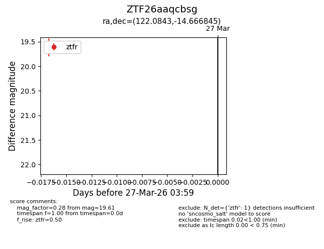
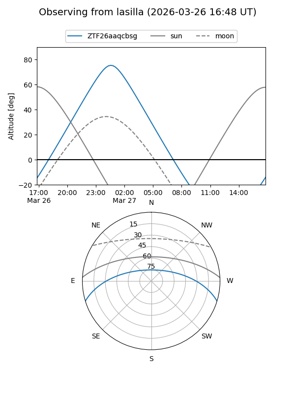
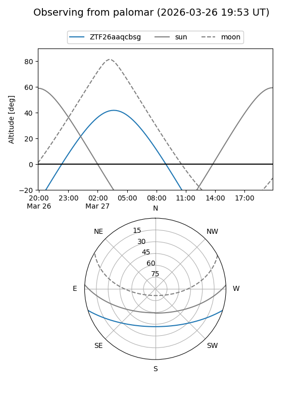

ZTF26aaqcbsg
Target ZTF26aaqcbsg at 2026-03-27 04:02
Aliases and brokers:
FINK: link
Lasair: link
ALeRCE: link
alt names
ZTF26aaqcbsg (ztf,fink_ztf)
Coordinates:
equatorial (ra, dec) = 122.0843,-14.66685
equatorial (HMS+DMS) = 08:08:20.23,-14:40:00.64
galactic (l, b) = (235.0144,+9.67432)
Flags:
Photometry:
last ztfr=19.61
1 ztfr detections
Lightcurve

Visibility


Additional plots